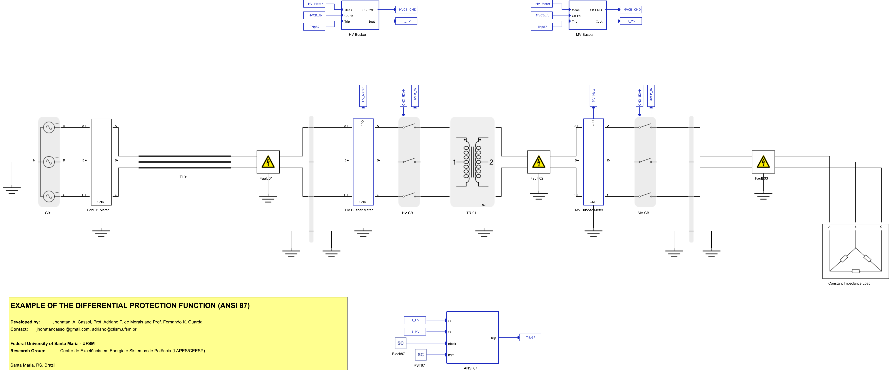
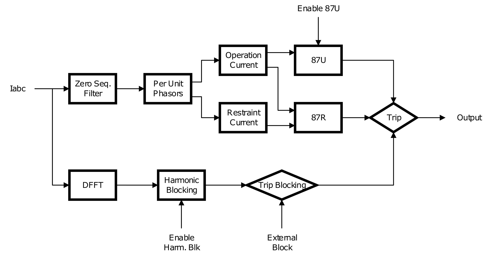
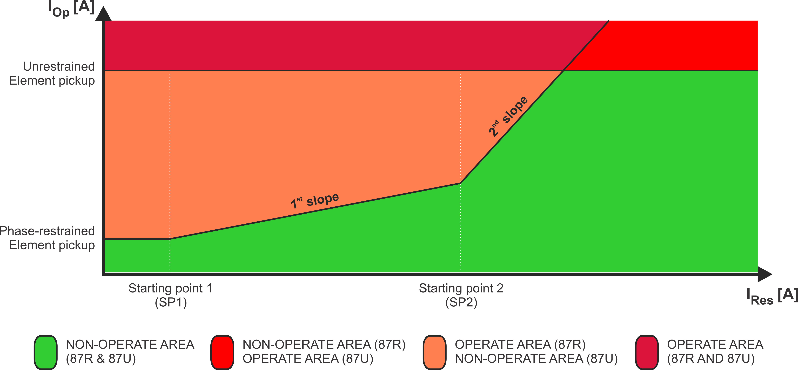
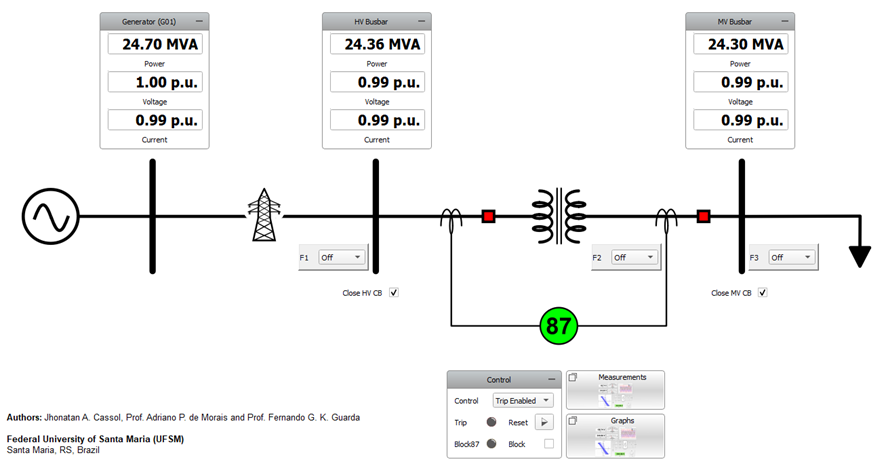
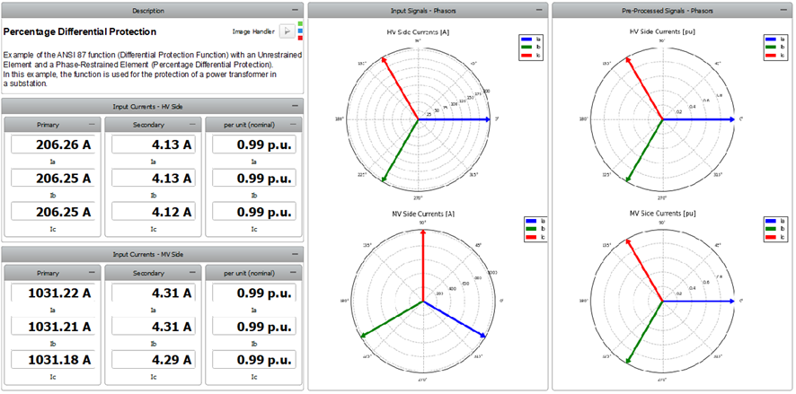
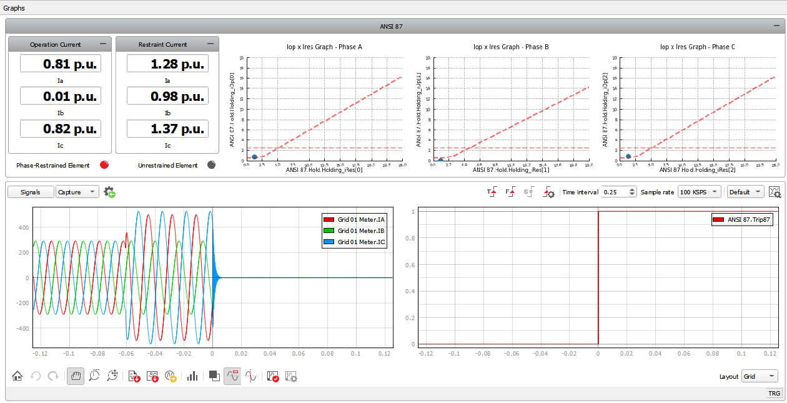
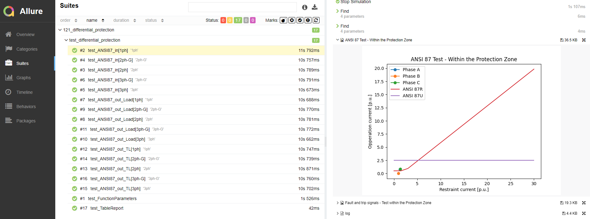
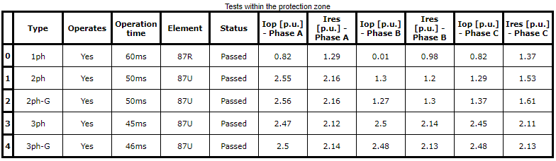

Differential Protection example
Percentage differential protection function (ANSI 87) with an unrestrained element.
Introduction
Percentage differential relays are commonly employed for the protection of transformers, synchronous machines, busbars and short transmission lines [1]. The primary characteristic of this function is its inherent selectivity, determined by the upstream and the downstream current transformers (CTs) of the protected equipment. Figure 1 (a) shows the single-line diagram of the differential relay. This protection function utilizes two coils: the operation coil (OP) and the restraining coil (R). The operation occurs when the ratio between the currents of the operation coil and the restraining coil exceeds or equals the parametrized slope. In Figure 1 (a), a fault within the relay protection zone is illustrated, where the current flow leads to a contribution for the operation current increment. In Figure 1 (b) a fault outside the relay protection zone is shown and, in this case, the currents cause the opposite effect.

Model description
The example model is a radial electric power system and is shown in Figure 2. It is composed of a grid model (V = 69 kV and 60 Hz), connected to a power transformer (TR-01) through a 20 km length transmission line. TR-01 is a three-phase transformer, connected in delta in the high-voltage (HV) side and wye grounded in the low-voltage (LV) side. The LV voltage is parametrized for 13.8 kV. A constant impedance load with 25 MVA and unitary power factor is connected to the low-voltage side.

Three fault location possibilities are present in this model: one within the relay protection zone (Fault 02) and two outside the zone (Fault 01 and Fault 03). The trip status of the ANSI 87 component operates the two circuit breakers of the TR-01. The protection logic is shown in Figure 3.

This protection scheme utilizes phasors of the CTs' currents and the operation currents that are calculated considering the difference between the measured currents in each side of the protected equipment, as shown in (1). The restraining current can be determined through various methods. One of them involves averaging on both sides of the protected equipment, as demonstrated in (2) and used in this protection scheme. The slope calculation is presented in (3).
Differential relays can incorporate various elements for their operation. For example, the SEL-487E Relay [2] employs two differential elements: the first is the percentage differential element, referred to as the "phase-restrained element" (87R); The second is the pure differential element, known as the "unrestrained element" (87U). In the 87U element, only the operation current is utilized, without the restrictive component.
Graphically, the operation of the ANSI 87 function can be illustrated as a combination of four areas, as shown in Figure 4 (adapted from [3]). If any of the operation areas is reached, the output function may initiate a trip on the equipment.

Simulation
This example contains a SCADA panel (Figure 5) with the widgets to monitor and interact with the simulation. Within this panel, there are two subpanels: the subpanel called “Measurements” (Figure 6) which provides the measurements of the currents on both sides of the transformer and the subpanel called “Graphs” (Figure 7) which displays the operation and restraint currents, as well as the information about the ANSI 87 protection function status and the IRes x IOp graph. The capture/scope widget is set to be triggered in the trip signal and shows information some variables of the model at the moment of the trip action.



Test Automation
This test script performs two test routines on the developed example. The first one checks if the IED is operating correctly for faults within the relay's protection zone, while the second verifies if there is any improper operation of the relay for faults outside the protection zone. At the end of the tests execution, a .pdf report is generated containing its results and information about the simulations.


Example requirements
Table 1 provides detailed information about the file locations and hardware requirements for running the model in real-time, followed by the HIL device resource utilization when running the model using this minimal hardware configuration. This information is provided to help you with running and customizing the model as you see fit.
| Files | |
|---|---|
| Typhoon HIL files | examples\models\power systems\differential protection differential protection example.tse differential protection example.cus |
| Minimum hardware requirements | |
| No. of HIL devices | 1 |
| HIL device model | HIL101 |
| Device configuration | 2 |
| HIL device resource utilization | |
| No. of processing cores | 3 |
| Max. matrix memory utilization | 51.81% (core2) 17.68% (core1) 2.42% (core0) |
| Max. time slot utilization | 41.82% (core2) 55.0% (core1) 14.55% (core0) |
| Simulation step, electrical | 1 µs |
| Execution rate, signal processing | 100 µs |
References
[1] KINDERMANN, G.; Proteção de Sistemas Elétricos de Potência. 2nd Ed. Florianopolis: UFSC-EEL-LabPlan, 2005. Vol 2. 207 p.
[2] Schweitzer Engineering Laboratories, “SEL-487E-5: Transformer Protection Relay with Sampled Values of TiDL Technology”, Instruction Manual, May 2022
[3] ABB, “Relion Protection and Control: 615 series”, Technical Manual, 2023
Authors
- Jhonatan Antônio Cassol
- Adriano Peres de Morais
- Fernando Guilherme Kaehler Guarda